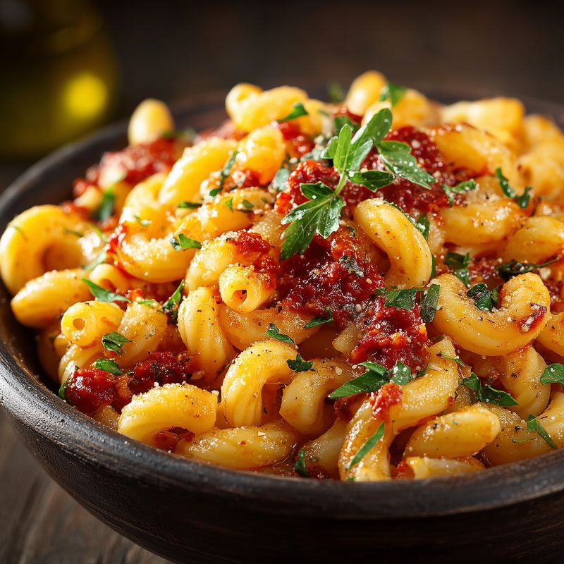
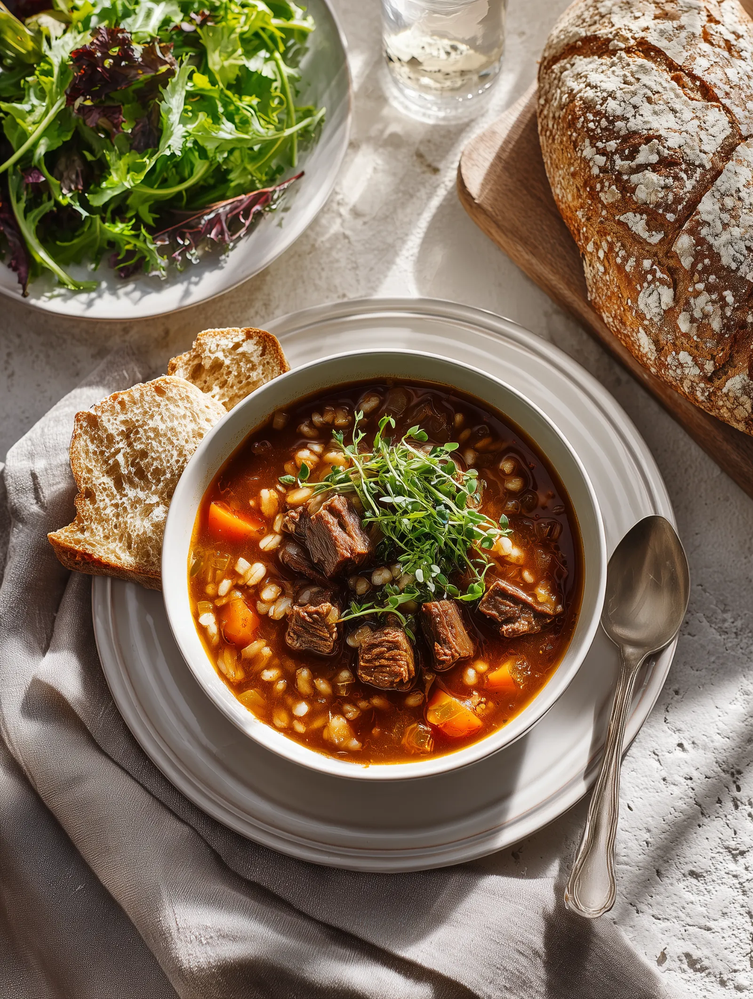
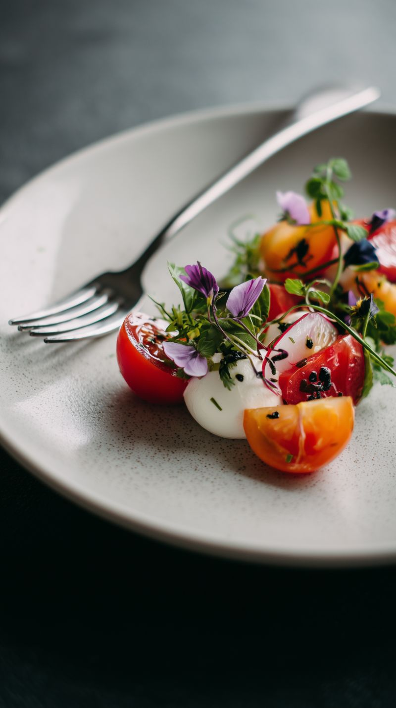
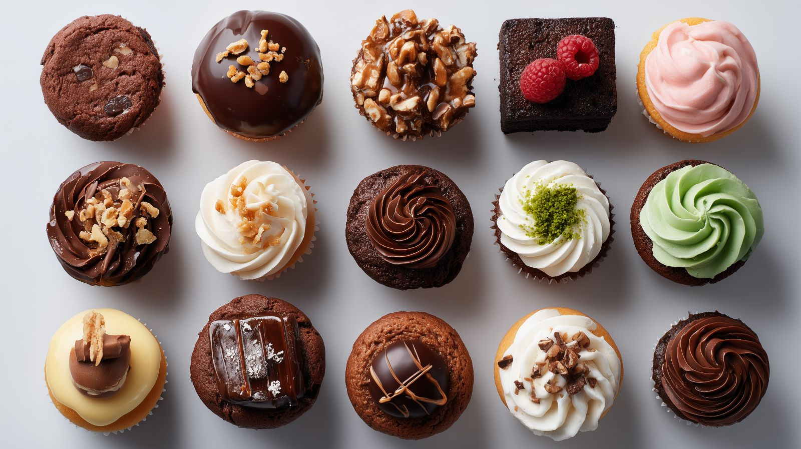
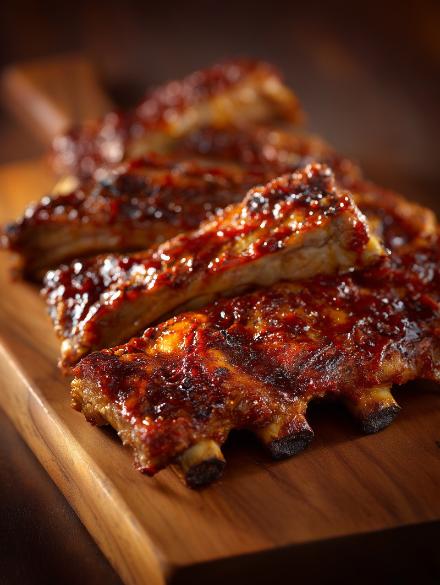
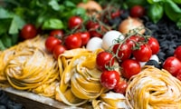

Jantar
Tagliatelle Artesanal com Sálvia
45 Min
Médio

Descubra ingredientes da estação, receitas autênticas e técnicas de empratamento para elevar sua mesa de jantar.
Novas receitas para experimentar esta semana




Após uma década no mundo corporativo, segui o coração até a Toscana para aprender os antigos segredos da autêntica cozinha italiana.
Estou aqui para mostrar que massas artesanais e molhos cozidos lentamente são mais simples do que você imagina.


Pasta FrescaMais de 2.000.000 de apaixonados por gastronomia e cozinheiros caseiros compartilhando sua paixão por sabores, técnicas e inspiração diária.
Entrevistas com chefs renomados e produtores locais explorando o futuro das artes culinárias.
Ouvir AgoraListas de compras selecionadas e receitas sazonais enviadas todo domingo para simplificar sua semana.
Inscreva-se GrátisNossas panelas, aventais e itens de despensa preferidos, escolhidos a dedo para a sua cozinha.
Ver Loja
"O workshop de habilidades com facas é essencial. Cozinho há anos e ele corrigiu vícios que eu nem sabia que tinha."

"Finalmente uma plataforma focada em técnica, e não só em ingredientes. Meu empratamento melhorou muito."
"O guia de fermentação natural transformou minha panificação. Minha família me pede esse pão toda semana!"
Junte-se a milhares de cozinheiros caseiros que estão dominando novas técnicas e transformando refeições do dia a dia em experiências.